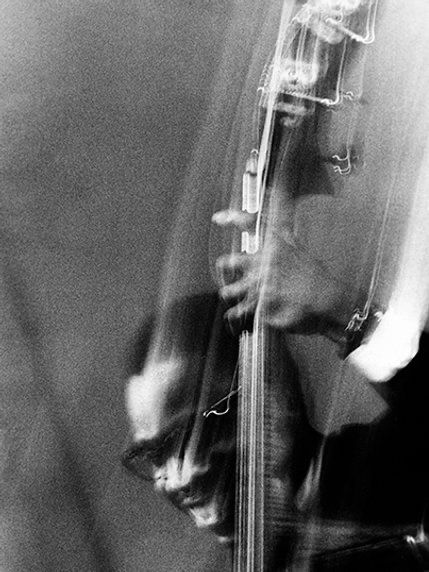

GALLERY
JAZZ, THROUGH THE LENS.
01 / PHOTO ARCHIVE BLUE NOTE, IN FOCUS.
Every great recording leaves more than a sound. It leaves faces, places and moments worth remembering. From the intimacy of recording studios to the energy of the stage, these images tell the story of Blue Note beyond the records.
24 / IMAGES